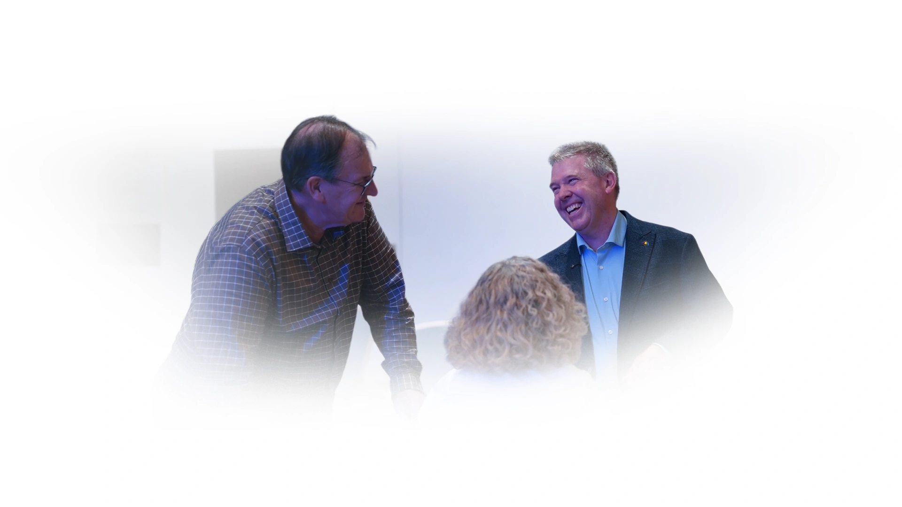
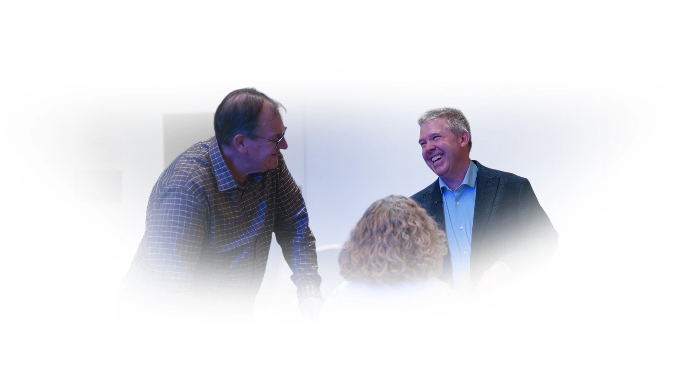
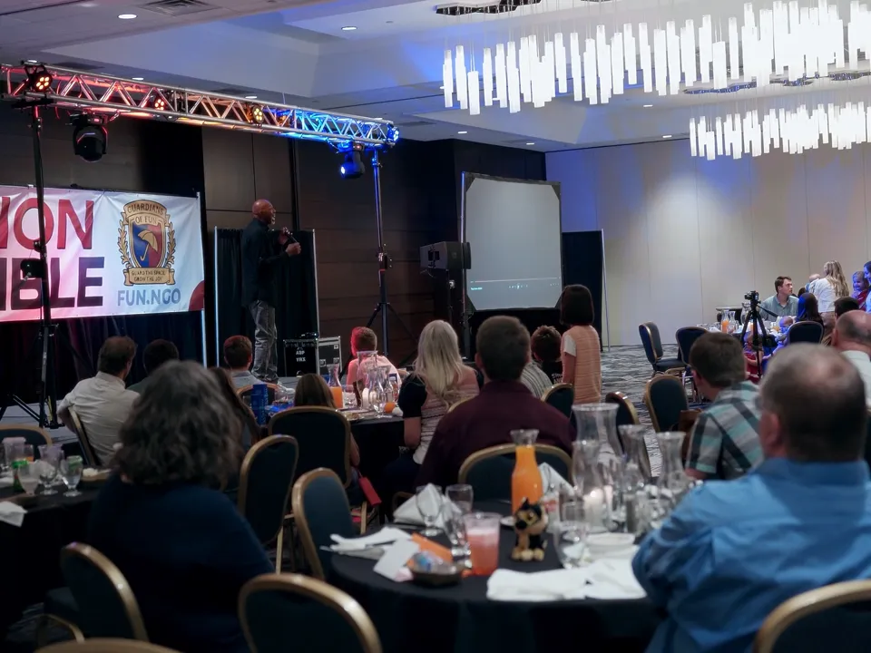
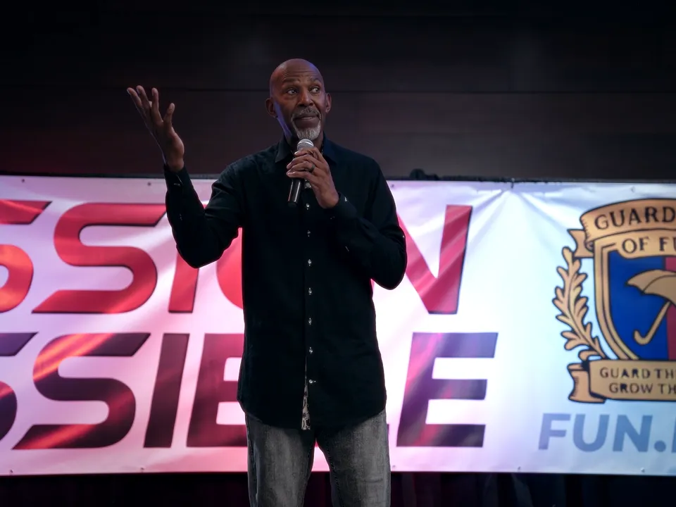
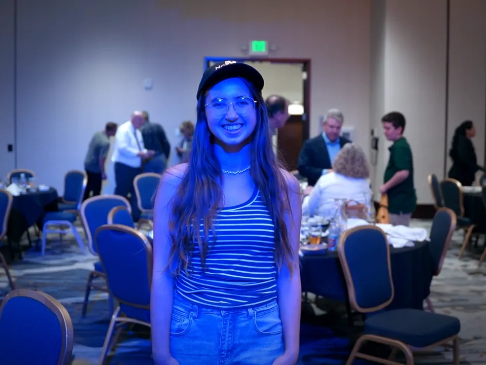
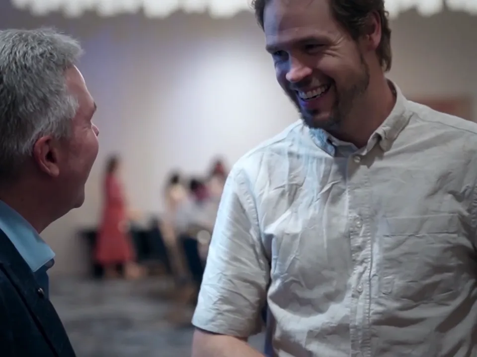
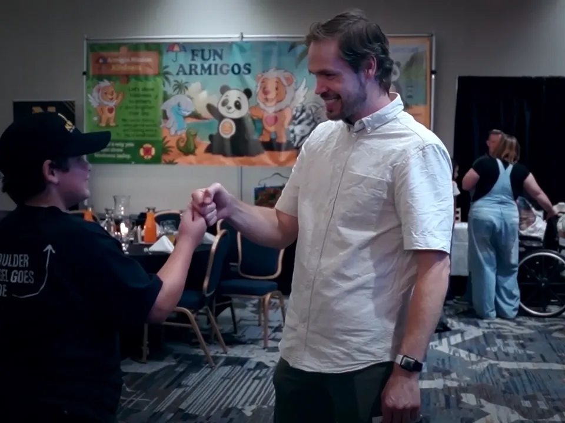
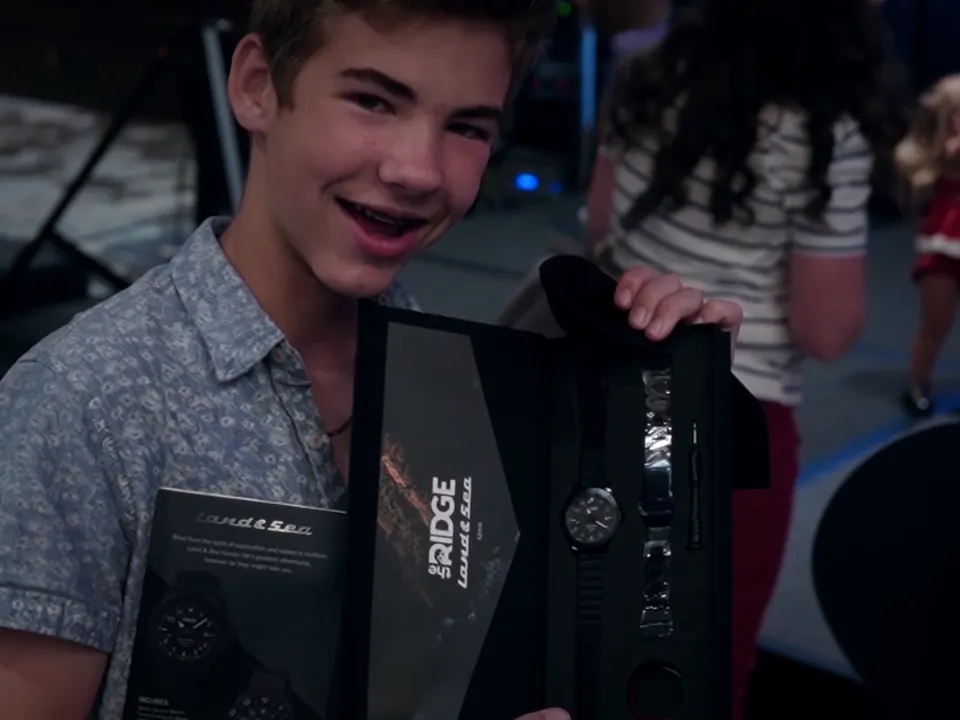
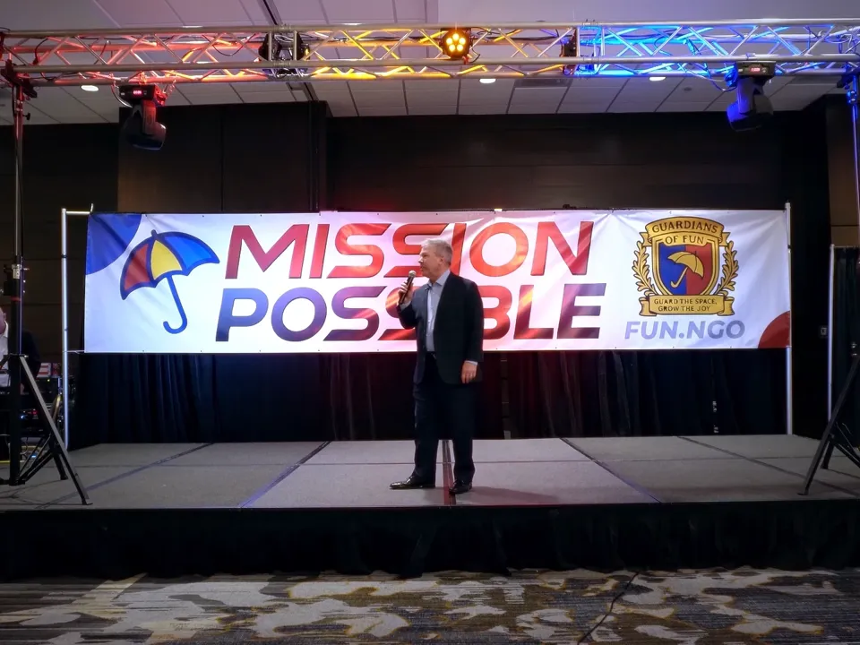

Signals of shared humanity

Simple tools for staying human when things get hard.
is a symbol to help you stay yourself
when things get hard.
You already know
what these mean.
Nobody argues with a red light.
Now take the signal away.
Cars aren't the only thing
that crashes.
So do our words.actions.
A red light doesn't stop
a car from crashing.
It helps a person
choose to stop.
What if people had
a signal like that too?

This is FUN's signal.
Small enough to wear.
Pause. Reflect. Retry.
It does not have to
go that way.
Follow a signal
These are real people at a real FUNFest. Every one of them had a hard week too.







Not every bump is small.
Some hurt. Some need real help,
not just a signal.
I'm glad that I
bumped into you.
Imagine this.
Everywhere pressure
shows up.
Try it once
Nothing is saved. Nothing is sent. This is just for you.
Just more people
who know.
More people who know what the umbrella means, so that when things get hard, somebody in the room has a word for it.
Carry the signal
It does not prove anything about you. It only says what you intend.